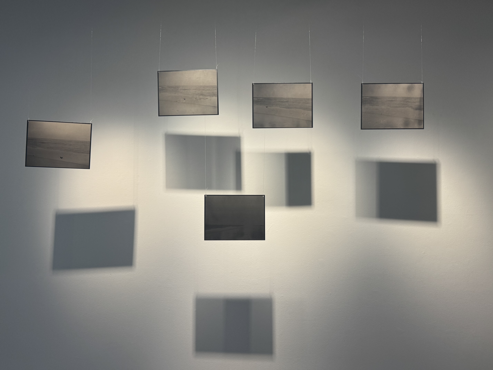
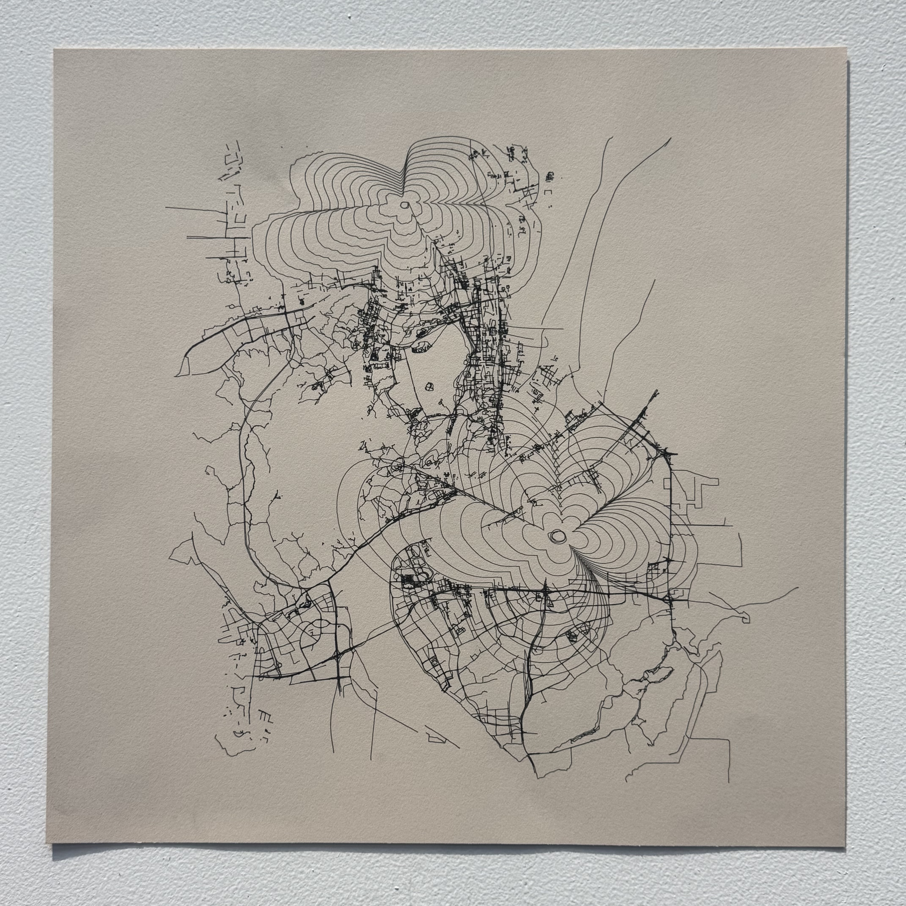

On Remembering
Laser engraving · Aluminum sheet & fishing line · 10″ × 7.5″

Laser engraving · Aluminum sheet & fishing line · 10″ × 7.5″

CNC drawing · On paper · 16″ × 16″

Letterpress printing on paper

Screenprinting on paper

Screenprinting on paper